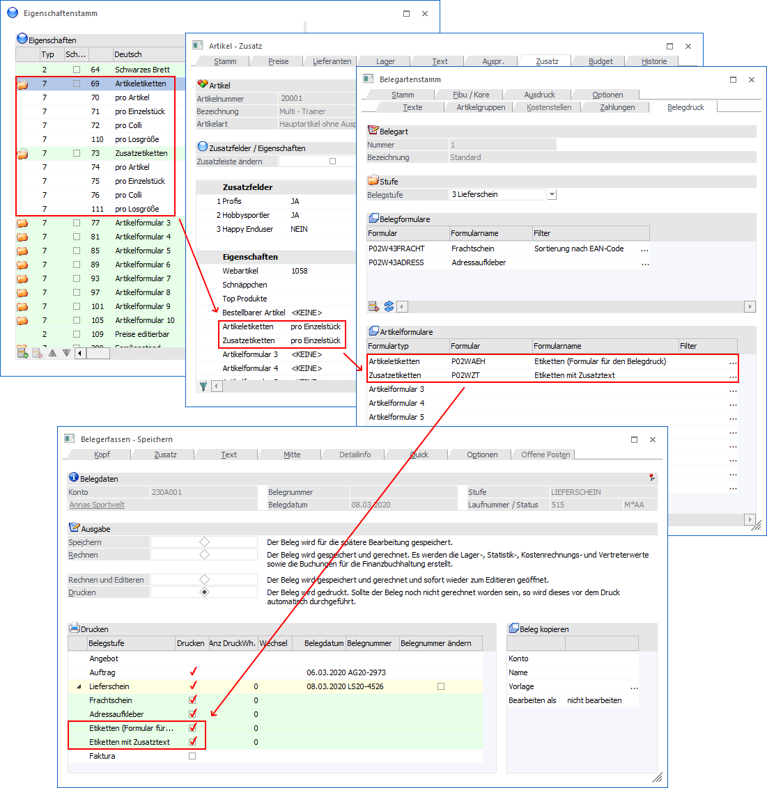

Grundsätzlich kann pro Belegstufe und Belegart ein Formular gedruckt werden.
Es gibt aber Szenarien, wo mehrere Formulare benötigt werden - z.B. sollen mit dem Lieferschein noch Frachtpapiere, Artikeletiketten, Detailbeschreibungen der Artikel, oder mit der Rechnung ein Zahlschein mit gedruckt werden.
Welche Möglichkeiten dafür gibt es?
ü Pro Beleg kann das sogenannte XX-Formular verwendet werden. Wenn das Formular vorhanden ist (z.B. P02W44XX) wird es automatisch nach der Rechnung ausgedruckt - der Anwender kann nicht eingreifen und den Ausdruck unterbinden.
ü Über die Belegarten kann individuell gesteuert werden, welche Formulare gedruckt werden sollen, wobei es hier 2 Arten von Formularen gibt:
Ø Belegformulare
Diese Formulare werden im Kontext zum Beleg gedruckt, wobei pro Beleg ein Exemplar des Zusatzformulars gedruckt wird - Beispiel dafür wären Frachtpapiere, ein Adresskleber oder dergleichen.
Ø Artikelformulare
Damit können Formulare Artikelabhängig gedruckt werden, wobei beim Artikel hinterlegt werden kann, ob und wie(oft) ein Formular gedruckt werden soll. Diese Steuerung erfolgt im Artikelstamm über die Eigenschaften.
Bei dieser 2. Variante kann beim Belegdruck selbst noch gewählt werden, welche Formulare gedruckt werden sollen - es erfolgt ein Vorschlag gemäß den Voreinstellungen, optional können aber noch gewisse Formulare deselektiert werden.
Zusammenhang "Eigenschaften -> Artikel -> Belegart -> Belegdruck"

ü In den Eigenschaften können die 10 Artikelformulare benannt werden.
ü Im Artikelstamm kann pro Artikelformular gesteuert werden, ob ein Formular angesprochen werden soll, und wenn ja, ob das Formular pro Artikel, pro Mengeneinheit oder pro Collieinheit gedruckt werden soll.
ü Über die Belegart wird eingestellt, welche Belegformulare und/oder welche Artikelformulare gedruckt werden sollen.
ü Beim Belegdruck werden alle zusätzlich zu druckenden Formulare nochmals gesammelt angezeigt. Option kann noch bestimmt werden, welche Formulare tatsächlich gedruckt werden sollen.